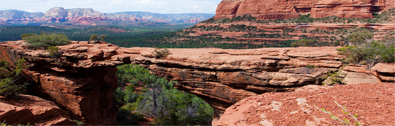

Sedona

Седона - небольшой городок в Аризоне, заслуживающий большего!
Рассмотрим 5 причин, по которым Седона стала круче, чем Гранд Каньон!
Преимущества
Настоящий городок
Седона не аттракцион для туристов, там течет своя жизнь

Там есть мост дьявола
Да, по нему можно пройти! Если конечно вы осмелитесь
Небольшая площадь
Все достопримечательности находятся очень близко
Красивая дорога
Ехать в Седону из Лас-Вегаса совсем не скучно
Мало туристов
Большинство едет в Гранд Каньон и толпится там
-
Жилье
Рекомендуем пожить в настоящем, все как в кино!
Еда
Всегда заказывайте фирменный бургер, вы не разочаруетесь!
Сувениры
Не только китайского, но и местного производства!

Заинтересовались?
Укажите предполагаемые даты поездки и мы покажем вам лучшие предложения гостиниц в Седоне
Поиск гостиницы в Седоне